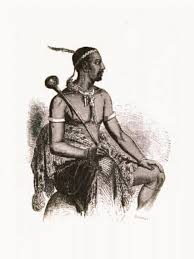

Welcome to the amazing features of basotho traditions
Lesotho is known for it's beautiful nature,culture and traditions and many more.Anyway, This is where you will learn more about Basotho culture and a lot is to be unfold and all you will want is to be part of Basotho culture.
 Before everything let's dive into Basotho culture and history the above picture is the hero of Basotho,he is known to be a man of peace and his name is Moshoeshoe.This peace is symbolized on the flag by the white color and a hat that represent Basotho heritage and here i will showcase Basotho culture Heritage thorough traditional clothing,music and dance and craft & art.